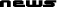

 |
|
01-08-2000
Welcome to our new pages, which will be online, untill the work on
the grand-page is done. The background picture was drawn by mirage
01-08-2000
We started the work on the Bizarre2000 64k intro. It will feature several
new techniques, to revolutionize the scene again.